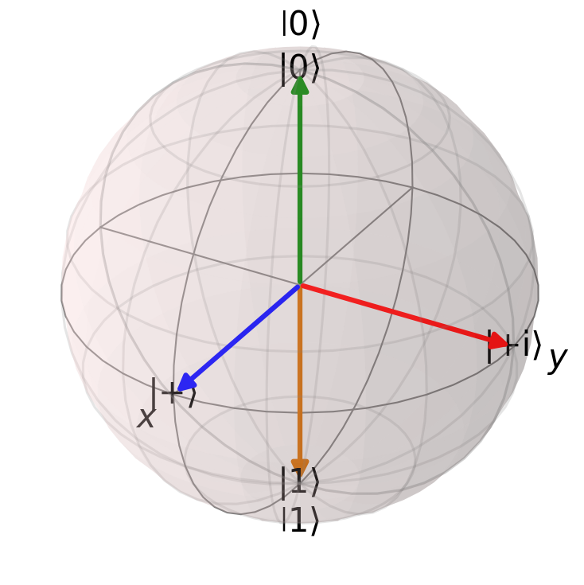
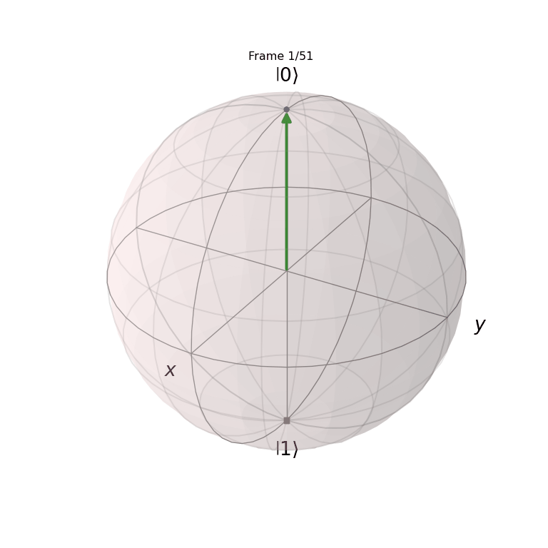

import numpy as np
import matplotlib.pyplot as plt
from qutip import Bloch, basis, sigmax, sigmay, sigmaz
def plot_bloch_sphere(states, labels):
fig = plt.figure()
ax = fig.add_subplot(111, projection='3d')
b = Bloch(axes=ax)
b.point_color = ['r', 'g', 'b', 'y']
for state, label in zip(states, labels):
b.add_states(state)
b.add_annotation(state, label)
b.render()
return fig
# some example states
psi1 = basis(2, 0) # |0⟩ i.e. classical 0
psi2 = basis(2, 1) # |1⟩ i.e. classical 1
psi3 = (basis(2, 0) + basis(2, 1)).unit() # (|0⟩ + |1⟩)/√2 i.e. equal superposition
psi4 = (basis(2, 0) + 1j*basis(2, 1)).unit() # (|0⟩ + i|1⟩)/√2 i.e. superposition with a phase difference
states = [psi1, psi2, psi3, psi4]
labels = ["|0⟩", "|1⟩", "|+⟩", "|+i⟩"]
fig = plot_bloch_sphere(states, labels)
plt.tight_layout()
plt.savefig('bloch_sphere_example.png', dpi=150, bbox_inches='tight')
plt.close(fig)Introduction
In classical computing, we typically deal with systems that can exist in two states, i.e., bits are either 1 or 0. In quantum computing, we deal with systems that can exist in multiple states simultaneously (using the Copenhagen interpretation).
Quantum States
Quantum Bits (Qubits)
While a classical bit is always in a definite state of either 0 or 1, a qubit can exist in a superposition of states:
Superposition: A qubit can be in a superposition of the basis states |0\rangle and |1\rangle. This means it’s not just 0 or 1, but a complex linear combination of both.
Probability Distribution vs. Specific State: A qubit has a probability distribution over possible measurement outcomes, rather than a probability of being in a specific state. Before measurement, the qubit exists in superposition.
State Vector: The state of a qubit is represented by a two-dimensional complex vector called a state vector. This vector contains the amplitudes for each basis state.
Measurement: When we measure a qubit, we force it to collapse into one of the basis states (typically |0\rangle or |1\rangle). The probability of each outcome is determined by the squared magnitude of the corresponding amplitude in the state vector.
Mathematical Representation
A qubit’s state is typically represented as:
|\psi\rangle = \alpha|0\rangle + \beta|1\rangle
Where:
- |\psi\rangle represents the qubit’s state
- \alpha and \beta are complex numbers called probability amplitudes
- |\alpha|^2 + |\beta|^2 = 1 (normalization condition)
A state vector is a mathematical representation of a qubit’s state in quantum mechanics. For a single qubit, it’s a two-dimensional complex vector that captures all the information about the qubit’s state.
Amplitudes
Amplitudes (\alpha and \beta) are complex numbers that determine the quantum state’s properties.
Probability: The squared magnitude of an amplitude (|\alpha|^2 or |\beta|^2) gives the probability of measuring the qubit in the corresponding basis state.
Phase: The complex phase of the amplitude carries information about the qubit’s behavior in interference situations.
Superposition: Non-zero amplitudes for both |0\rangle and |1\rangle indicate the qubit is in a superposition of these basis states.
Example 1: Classical-like States
- |\psi\rangle = 1|0\rangle + 0|1\rangle
- This represents a qubit in the definite state |0\rangle.
- Measuring this qubit will always yield |0\rangle.
- |\psi\rangle = 0|0\rangle + 1|1\rangle
- This represents a qubit in the definite state |1\rangle.
- Measuring this qubit will always yield |1\rangle.
Example 2: Equal Superposition
|\psi\rangle = \frac{1}{\sqrt{2}}|0\rangle + \frac{1}{\sqrt{2}}|1\rangle
- This is often written as |+\rangle and represents an equal superposition.
- Probability of measuring |0\rangle: |\frac{1}{\sqrt{2}}|^2 = \frac{1}{2}
- Probability of measuring |1\rangle: |\frac{1}{\sqrt{2}}|^2 = \frac{1}{2}
- The qubit has an equal chance of being measured in either state.
Example 3: Unequal Superposition
|\psi\rangle = \frac{\sqrt{3}}{2}|0\rangle + \frac{1}{2}|1\rangle
- Probability of measuring |0\rangle: |\frac{\sqrt{3}}{2}|^2 = \frac{3}{4}
- Probability of measuring |1\rangle: |\frac{1}{2}|^2 = \frac{1}{4}
- The qubit is more likely to be measured in state |0\rangle.
Example 4: Complex Amplitudes
|\psi\rangle = \frac{1}{\sqrt{2}}|0\rangle + \frac{i}{\sqrt{2}}|1\rangle
- Probability of measuring |0\rangle: |\frac{1}{\sqrt{2}}|^2 = \frac{1}{2}
- Probability of measuring |1\rangle: |\frac{i}{\sqrt{2}}|^2 = \frac{1}{2}
- Equal probabilities, but the i in the second amplitude introduces a phase difference.
- This phase difference is important in quantum interference but doesn’t affect single-qubit measurements.
Multi-Qubit Systems
For systems with multiple qubits, the state vector grows exponentially:
- 1 qubit: 2-dimensional vector
- 2 qubits: 4-dimensional vector
- 3 qubits: 8-dimensional vector
- n qubits: 2^n dimensional vector
This exponential growth in the state space is what gives quantum computers their potential power relative to classical computers.
Bloch Sphere Representation
Qubits are often visualized using the Bloch sphere, a unit sphere in three-dimensional space. Any single qubit state can be represented as a point on the surface of this sphere.

- The |0\rangle state is represented by a point at the north pole of the sphere.
- The |1\rangle state is represented by a point at the south pole of the sphere.
- The |+\rangle state (equal superposition) is represented by a point on the equator along the x-axis.
- The |+i\rangle state is represented by a point on the equator along the y-axis.
Visualizing State Evolution
We can also use this to visualize how quantum states evolve under certain operations. Here’s an example that shows the state evolution under the action of a Hadamard-like gate:
import numpy as np
import matplotlib.pyplot as plt
from qutip import Bloch, basis, qeye, sigmax, sigmay, sigmaz
from matplotlib.animation import FuncAnimation
import imageio
def plot_bloch_sphere(states, filename='bloch_sphere_evolution.gif', duration=0.1):
fig = plt.figure(figsize=(8, 8))
ax = fig.add_subplot(111, projection='3d')
b = Bloch(axes=ax)
def update(frame):
ax.cla()
b = Bloch(axes=ax)
b.add_states(states[frame])
b.add_states([states[0], states[-1]], 'point')
b.render()
ax.set_title(f'Frame {frame + 1}/{len(states)}')
anim = FuncAnimation(fig, update, frames=len(states), repeat=True)
frames = []
for i in range(len(states)):
update(i)
fig.canvas.draw()
image = np.frombuffer(fig.canvas.tostring_rgb(), dtype='uint8')
image = image.reshape(fig.canvas.get_width_height()[::-1] + (3,))
frames.append(image)
imageio.mimsave(filename, frames, duration=duration)
plt.close(fig)
def state_evolution(initial_state, operation, steps=50):
states = [initial_state]
for i in range(1, steps+1):
states.append(operation(initial_state, i/steps))
return states
def hadamard_like_transform(state, t):
H = np.sqrt(1 - t) * sigmaz() + np.sqrt(t) * sigmax()
return (1 - t) * state + t * H * state
psi0 = basis(2, 0) # initial state |0⟩
states = state_evolution(psi0, hadamard_like_transform, steps=50)
plot_bloch_sphere(states, 'bloch_sphere_evolution.gif', duration=0.1)/tmp/ipykernel_572339/1348161396.py:26: MatplotlibDeprecationWarning: The tostring_rgb function was deprecated in Matplotlib 3.8 and will be removed in 3.10. Use buffer_rgba instead.
image = np.frombuffer(fig.canvas.tostring_rgb(), dtype='uint8')
This will show how the |0\rangle state evolves into the |+\rangle state under the action of the Hadamard-like gate.
Are States Typically Between 0 and 1?
- The basis states are typically labeled |0\rangle and |1\rangle, which might suggest values between 0 and 1.
- However, the actual state of a qubit is described by complex amplitudes \alpha and \beta. These amplitudes can take any complex values as long as |\alpha|^2 + |\beta|^2 = 1.
- The probabilities of measuring |0\rangle or |1\rangle (given by |\alpha|^2 and |\beta|^2 respectively) are between 0 and 1 (as they must be for any probability).
Example
With a qubit in the state:
|\psi\rangle = \frac{1}{\sqrt{2}}|0\rangle + \frac{1}{\sqrt{2}}|1\rangle
This state has an equal probability of being measured as |0\rangle or |1\rangle. The probabilities are:
- P(|0\rangle) = |\frac{1}{\sqrt{2}}|^2 = \frac{1}{2}
- P(|1\rangle) = |\frac{1}{\sqrt{2}}|^2 = \frac{1}{2}
Probability Vectors
Probability vectors are fundamental in describing quantum states. They represent the probability distribution of possible outcomes when measuring a quantum system.
Properties:
- All entries are non-negative real numbers.
- The sum of all entries equals 1.
Example:
For a coin flip:
p = [0.5, 0.5] # Represents a fair coin (50% chance of heads, 50% chance of tails)Linear Combinations and Convex Combinations
In quantum mechanics, states can be combined linearly, but probability vectors specifically use convex combinations.
Convex Combination:
A linear combination where: 1. All coefficients are non-negative. 2. The sum of coefficients equals 1.
This ensures that the result is still a valid probability vector.
Example:
p1 = [0.3, 0.7]
p2 = [0.6, 0.4]
α = 0.4
convex_combination = α * np.array(p1) + (1 - α) * np.array(p2)
# Result: [0.48, 0.52]Classical Transformations
Classical transformations in quantum computing are represented by matrices that transform one probability vector into another.
Properties of Valid Classical Transformation Matrices:
- All entries are non-negative.
- The sum of each column is 1 (stochastic property).
Example: NOT Operation
The NOT operation flips a bit. In matrix form for a single qubit:
\text{NOT} = \begin{bmatrix} 0 & 1 \\ 1 & 0 \end{bmatrix}
Tensor Product
The tensor product is used to combine quantum systems, creating a joint state space.
Properties:
- Combines probability vectors of individual systems.
- Results in a higher-dimensional probability vector.
Example:
For two coins:
coin1 = [0.5, 0.5] # Fair coin
coin2 = [0.7, 0.3] # Biased coin
joint_state = np.kron(coin1, coin2)
# Result: [0.35, 0.15, 0.35, 0.15]Note: Not all higher-dimensional probability vectors can be decomposed into tensor products of lower-dimensional vectors.
Quantum Circuits
Quantum circuits are sequences of operations (gates) applied to qubits. They are the quantum analogue of classical logic circuits.
Example: Simple Quantum Circuit
┌───┐
q_0: ─┤ H ├─────●─────
└───┘ │
q_1: ───────────┼─────
│
q_2: ───────────X─────This circuit applies a Hadamard gate (H) to the first qubit and then a controlled-NOT (CNOT) with the first qubit as control and the third as target. 3. \alpha and \beta: - These are complex numbers called probability amplitudes. - |\alpha|^2 gives the probability of measuring the qubit in state |0\rangle. - |\beta|^2 gives the probability of measuring the qubit in state |1\rangle. - The normalization condition requires that |\alpha|^2 + |\beta|^2 = 1.
Vector Notation
In vector notation, the same state can be written as:
|\psi\rangle = \begin{bmatrix} \alpha \\ \beta \end{bmatrix}
Dirac (Bra-Ket) Notation
- Ket |\psi\rangle: Represents a column vector.
- Bra \langle\psi|: Represents the conjugate transpose of |\psi\rangle, i.e., a row vector.
- Conjugate Transpose (or Hermitian Conjugate): formed from an m-by-n matrix by taking the transpose of the matrix (forming an n-by-m matrix), then taking the complex conjugate of each entry (negating their imaginary components).
Complex Numbers and Polar Form
Since \alpha and \beta are complex numbers, they can be written in polar form:
\begin{align*} \alpha &= r_1e^{i\theta_1} \\ \beta &= r_2e^{i\theta_2} \end{align*}
Where: - r_1 and r_2 are the magnitudes (r_1^2 + r_2^2 = 1) - \theta_1 and \theta_2 are the phases - i is the imaginary unit (i^2 = -1)
Density Matrix
For mixed states or when dealing with subsystems, we often use the density matrix representation:
\rho = |\psi\rangle\langle\psi| = \begin{bmatrix} |\alpha|^2 & \alpha\beta^* \\ \alpha^*\beta & |\beta|^2 \end{bmatrix}
Where * denotes complex conjugation.
Examples with Mathematical Representation
|0\rangle state: |\psi\rangle = 1|0\rangle + 0|1\rangle = \begin{bmatrix} 1 \\ 0 \end{bmatrix}
|1\rangle state: |\psi\rangle = 0|0\rangle + 1|1\rangle = \begin{bmatrix} 0 \\ 1 \end{bmatrix}
|+\rangle state (equal superposition): |\psi\rangle = \frac{1}{\sqrt{2}}|0\rangle + \frac{1}{\sqrt{2}}|1\rangle = \frac{1}{\sqrt{2}}\begin{bmatrix} 1 \\ 1 \end{bmatrix}
|-\rangle state: |\psi\rangle = \frac{1}{\sqrt{2}}|0\rangle - \frac{1}{\sqrt{2}}|1\rangle = \frac{1}{\sqrt{2}}\begin{bmatrix} 1 \\ -1 \end{bmatrix}
|+i\rangle state: |\psi\rangle = \frac{1}{\sqrt{2}}|0\rangle + \frac{i}{\sqrt{2}}|1\rangle = \frac{1}{\sqrt{2}}\begin{bmatrix} 1 \\ i \end{bmatrix}
Bloch Sphere Coordinates
The Bloch sphere provides a geometrical representation of a qubit’s state. Any pure state of a qubit can be represented as:
|\psi\rangle = \cos\left(\frac{\theta}{2}\right)|0\rangle + e^{i\phi}\sin\left(\frac{\theta}{2}\right)|1\rangle
Where: - \theta (theta) is the polar angle (0 \leq \theta \leq \pi) - \phi (phi) is the azimuthal angle (0 \leq \phi < 2\pi)
This representation directly maps to the surface of the Bloch sphere.
Multi-Qubit Systems
For a system of n qubits, the state is represented by a 2^n dimensional complex vector. For example, a two-qubit system has the general form:
|\psi\rangle = \alpha|00\rangle + \beta|01\rangle + \gamma|10\rangle + \delta|11\rangle
Where \alpha, \beta, \gamma, and \delta are complex amplitudes satisfying |\alpha|^2 + |\beta|^2 + |\gamma|^2 + |\delta|^2 = 1.
References
- QWorld
- Dirac Bra-Ket Notation
- Mermin, N. D. (2007). Quantum Computer Science: An Introduction. Cambridge University Press.
- Sutor, R. S. (2019). Dancing with Qubits: How quantum computing works and how it can change the world. Packt Publishing.
- Griffiths, D. J., & Schroeter, D. F. (2018). Introduction to Quantum Mechanics (3rd ed.). Cambridge University Press.
- Preskill, J. (2018). Quantum Computing in the NISQ era and beyond. Quantum, 2, 79.